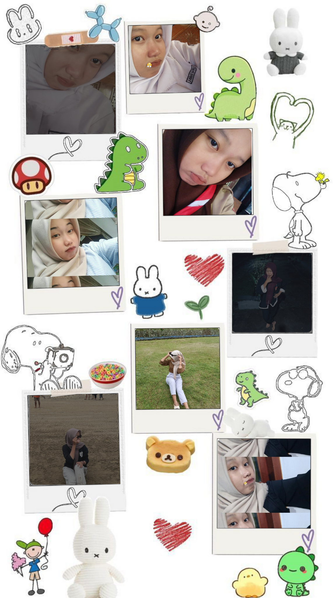
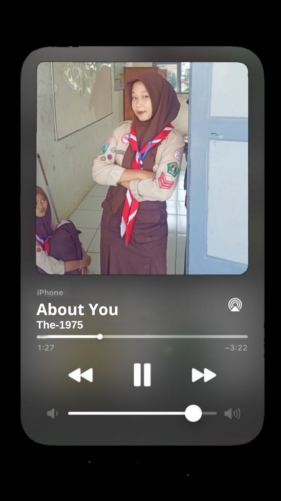
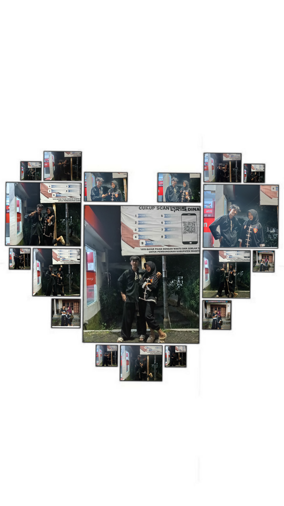
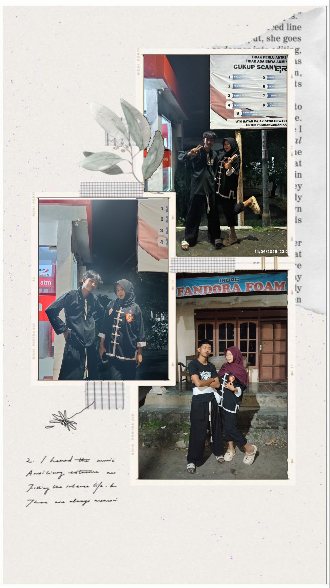
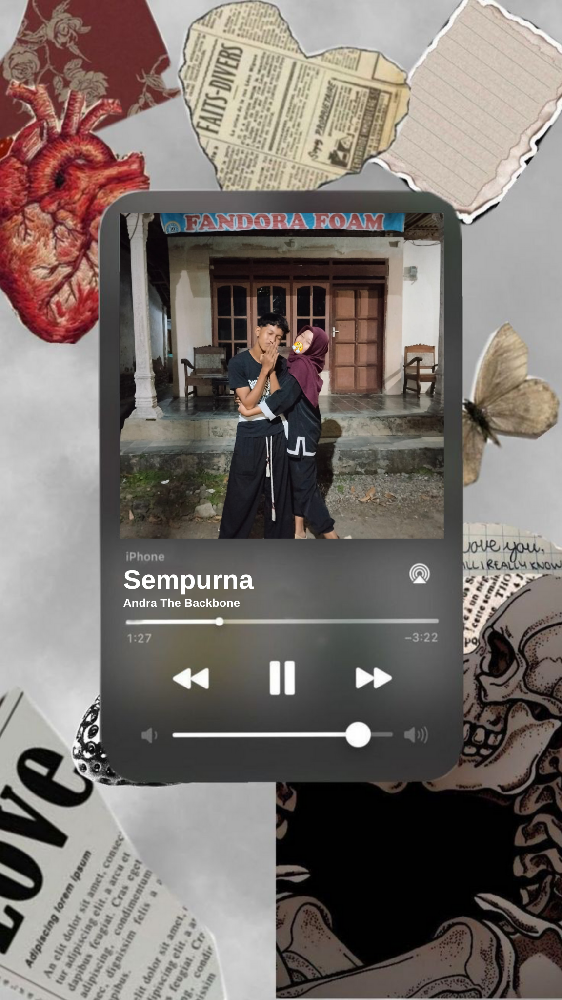

For Youu Minee🥺🤍
Putar lagunya duluu yaa abis ituu geser kekanan, jangann lupaa jugaaa dibacaaa tulisannyaaa
Browser kamu tidak mendukung audio player.





Ini foto pertama kita waktu ketawa bareng di taman 💖